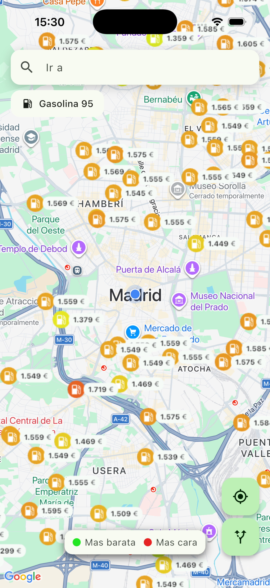
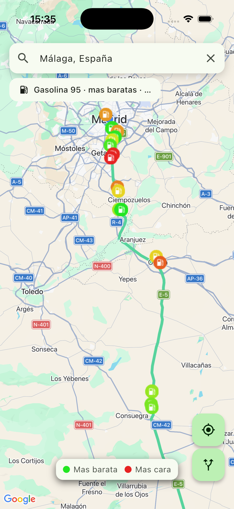
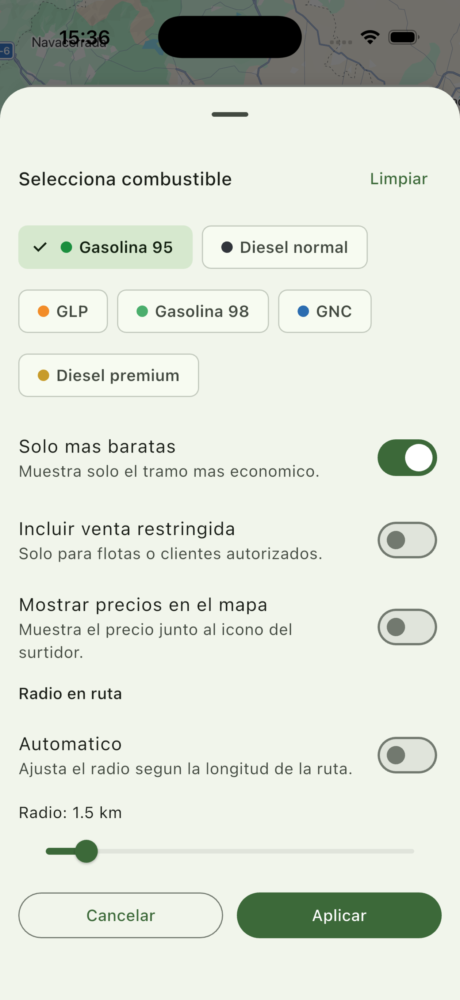
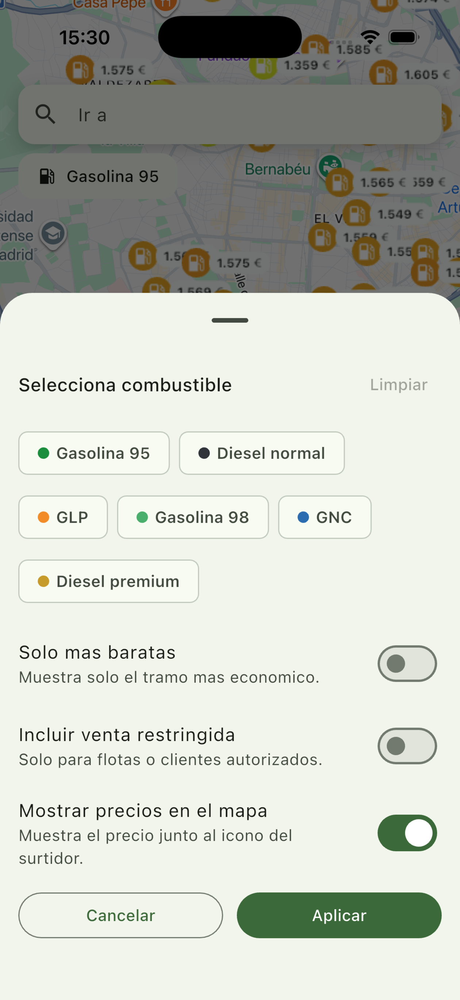
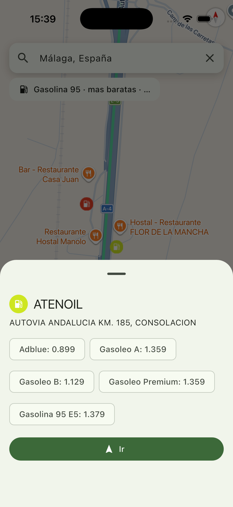
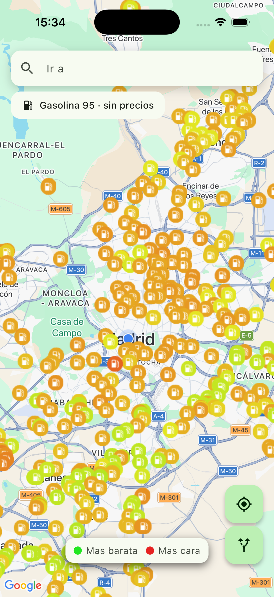
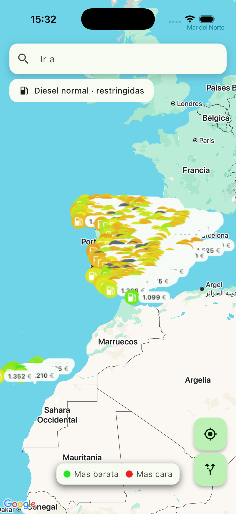
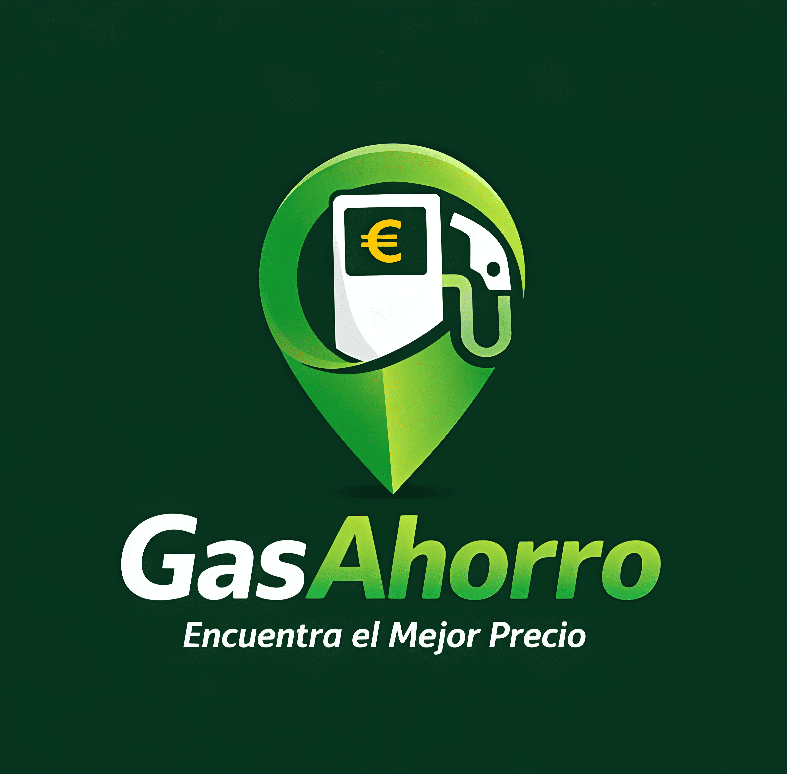

Ruta inteligente
Añade tu destino y visualiza gasolineras a lo largo del camino. El radio es configurable de 500 m a 10 km y ahora también puedes comparar rutas alternativas antes de decidir.
Gas Ahorro compara precios mientras conduces y te muestra las gasolineras más baratas en ruta. Ahora también sugiere rutas alternativas, permite evitar autopistas de peaje y muestra el horario de estaciones cerradas para que decidas mejor cada parada.


En cada trayecto hay diferencias claras entre estaciones. Gas Ahorro te muestra las mejores opciones antes de que pagues de más.
Añade tu destino y visualiza gasolineras a lo largo del camino. El radio es configurable de 500 m a 10 km y ahora también puedes comparar rutas alternativas antes de decidir.
Identifica al instante el precio: verde más barato, rojo más caro. Muestra el precio junto al icono del surtidor si lo deseas.
Elige gasolina 95/98, diésel normal o premium, GLP o GNC. El mapa se adapta a tu elección.
Activa estaciones con acceso restringido para flotas privadas o camiones cuando lo necesites.
Filtra y quédate solo con las estaciones más económicas en mapa o en ruta, con la lógica corregida para mostrar resultados más precisos.
Activa el filtro para evitar autopistas de peaje y encuentra una ruta más rentable también en el coste del trayecto.
Si una gasolinera está cerrada, la app muestra su horario para que sepas cuándo abrirá o si te conviene elegir otra opción.
Selecciona una gasolinera, revisa todos sus precios y pulsa “Ir” para abrir tu navegador o app de navegación favorita y añadir la parada.

Pantallas pensadas para decidir en segundos. Todo lo importante, siempre visible.




Gas Ahorro es 100% gratuita con banners. Si prefieres una experiencia limpia, puedes eliminar la publicidad con un pago único de 1,99 €.
Disponible para iOS y Android en App Store y Google Play.

Se actualizan con la frecuencia disponible de los datos oficiales, para que siempre tengas una referencia actual al decidir.
Sí. En el filtro puedes desactivar la opción de mostrar precios junto al icono de la gasolinera.
Puedes elegir entre 500 metros y 10 km, o activar el ajuste automático según la longitud de la ruta.
Sí. Puedes activar el filtro para evitar peajes y calcular la ruta mostrando gasolineras que encajen mejor con ese trayecto.
La app indica que está cerrada y muestra su horario disponible para que decidas si esperar o elegir otra parada.
Sí, tu filtro se conserva cuando cierras la aplicación.
Gas Ahorro ofrece información orientativa sobre precios de combustibles. El precio final depende de cada estación de servicio. Al usar la app, aceptas el uso responsable de la información mostrada.
La app usa permisos de ubicación para navegación y Google AdMob para mostrar anuncios. Puedes consultar cómo tratamos los datos, cómo gestionar el consentimiento y cómo desactivar anuncios con el pago único en nuestra Política de Privacidad completa.
¿Dudas o sugerencias? Escríbenos a soporte@gasahorro.es. Respondemos rápido.
Esta web solo utiliza cookies técnicas necesarias para su funcionamiento. No usamos cookies de analítica ni de publicidad en la web. La publicidad de la app móvil se gestiona dentro de la app.